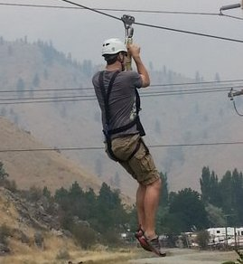

West Coast Activities
The West Coast offers a plethora of possible adventures, from the driftwood strewn shores of the northern range to the sandy beaches of its southern tip; ancient old-growth forest inhabited by giants and miles of beautiful beaches. The West coast has the adventure you’re looking for. Here we showcase some of the possibilities to get your creative juices flowing.
Hiking Along the Coast
Hikes along the coast are innumerable and no two are alike. If hiking is what you fancy then our experts can help you find the best trailheads. Don’t worry if you aren’t an expert hiker though, while hikes can vary in difficulty, our experts will help you get the most out of a leisure saunter through the woods, and to wonderful ocean views or old-growth forests. So, leave the hustle and bustle of the city behind and walk into a wonderland of serenity.
Some Suggested Hikes:
- Umpqua Dunes, Oregon
- Cape Perpetua, Oregon
- Samuel H. Boardman, Oregon
- Redwood National Park, California
Get Your Heart Racing
 Perhaps you like the rush of adrenaline, and you ’re looking for something more exciting. Well, we got you covered there too. You ’ll find many heart racing adventures all along the coast, from zip lines tours to dune buggy racing we can help you plan an itinerary with non-stop action. Let one of our experienced thrill seekers point you in the right direction, and enjoy.
Some of the possibilities include:
- Paragliding
- Surfing
- Sky Diving
- Tree Climbing
- Mountain Biking
- Kayaking
Events
Perhaps you might want to enjoy some of the local events that might be happening as you travel down the coast. From concerts, wine and beer tastings, festivals, walks/runs to salmon celebrations, we can weave all of your interest and make a trip to remember. Let us find those gems for you as we tailor a trip specifically for you and your family.